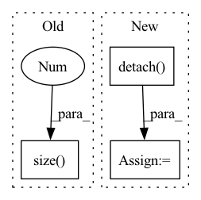

Pattern ID :40563

Before Change
self.temperature = temperature
def forward(self, g_t: torch.Tensor) -> torch.Tensor:
train_bs, class_num = g_t.size(0), g_t.size(1)
g_t_temp = g_t / self.temperature
g_t_temp_softmax = nn.Softmax(dim=1)(g_t_temp)
target_entropy_weight = entropy(g_t_temp_softmax).detach()
target_entropy_weight = 1 + torch.exp(-target_entropy_weight)
After Change
def forward(self, logits: torch.Tensor) -> torch.Tensor:
batch_size, num_classes = logits.shape
predictions = F.softmax(logits / self.temperature, dim=1) // batch_size x num_classes
entropy_weight = entropy(predictions).detach()
entropy_weight = 1 + torch.exp(-entropy_weight)
entropy_weight = (batch_size * entropy_weight / torch.sum(entropy_weight)).unsqueeze(dim=1) // batch_size x 1
class_confusion_matrix = torch.mm((predictions * entropy_weight).transpose(1, 0), predictions)
class_confusion_matrix = class_confusion_matrix / torch.sum(class_confusion_matrix, dim=1)
mcc_loss = (torch.sum(class_confusion_matrix) - torch.trace(class_confusion_matrix)) / num_classes
return mcc_loss
In pattern: SUPERPATTERN
Frequency: 3
Non-data size: 3
Instances
Fragment ID: 114795782
Project Name: thuml/transfer-learning-library
Commit Name: 7f63cd30ea0e7cf8961db90d2af8630e2429b434
Time: 2020-08-28
Author: 13126830206@163.com
File Name: dalib/adaptation/mcc.py
M Class Name: MinimumClassConfusionLoss
N Class Name: MinimumClassConfusionLoss
M Method Name: forward(2)
N Method Name: forward(2)
M Parent Class: nn.Module
N Parent Class: nn.Module
M File Name: dalib/adaptation/mcc.py
N File Name: dalib/adaptation/mcc.py
M Start Line: 17
M End Line: 23
N Start Line: 41
N End Line: 46
'>
Before Change
gap = x * gap_weight.unsqueeze(2).unsqueeze(3)
gmp = self.global_max_pool(x)
gmp_logit = self.global_max_pool_fc(gmp.view(x.size(0), -1))
gmp_weight = self.global_max_pool_fc.linear.weight.data.clone()
gmp = x * gmp_weight.unsqueeze(2).unsqueeze(3)
After Change
gmp = self.maxpool(x)
gmp_logit = self.maxpool_fc(gmp.flatten(1))
gmp_weight = self.maxpool_fc.weight.detach().clone()
gmp = x * gmp_weight[:, :, None, None]
cam_logit = torch.cat([gap_logit, gmp_logit], dim=1)
x = torch.cat([gap, gmp], dim=1)
x = self.conv(x)
x = self.act(x)
heatmap = torch.sum(x, dim=1, keepdim=True)
return x, cam_logit, heatmap
'>
Fragment ID: 114795792
Project Name: stomoya/animeface
Commit Name: a90fefdcfa84ce38987194a1ebd71b59eee30e0b
Time: 2022-03-23
Author: stomoya0110@gmail.com
File Name: implementations/UGATIT/model.py
M Class Name: CAM
N Class Name: CAM
M Method Name: forward(2)
N Method Name: forward(2)
M Parent Class: nn.Module
N Parent Class: nn.Module
M File Name: implementations/UGATIT/model.py
N File Name: implementations/UGATIT/model.py
M Start Line: 112
M End Line: 123
N Start Line: 42
N End Line: 58
'>
Before Change
def calc_bandwidth(set1, set2, kernel_num=10):
batch_size = set1.size(0)
seq_len = set2.size(0)
set1_centre = set1.mean(-1).view(-1, 1)
set2_centre = set2.mean(-1).view(1, -1)
distance = (set1_centre - set2_centre).pow(2).pow(0.5).max(-1)[0].max(-1)[0]
After Change
particle_num = first_kernel.size(-1)
kernel_num
scale_list = list(np.linspace(min_scale, max_scale, num=kernel_num))
bandwidth_list = [(kernel_mean * scale).view(-1, 1, 1).detach() for scale in scale_list]
first_items = 0
third_items = 0
for h in bandwidth_list:
'>
Fragment ID: 114795784
Project Name: deligentfool/dqn_zoo
Commit Name: 1ac00bac8d92870064cdcf754b6e29278f14ae79
Time: 2020-11-04
Author: 1027660817@qq.com
File Name: MMD_DQN/mmd_dqn.py
M Class Name: AnonimousClass
N Class Name: AnonimousClass
M Method Name: calc_bandwidth(5)
N Method Name: calc_bandwidth(3)
M Parent Class:
N Parent Class:
M File Name: MMD_DQN/mmd_dqn.py
N File Name: MMD_DQN/mmd_dqn.py
M Start Line: 33
M End Line: 40
N Start Line: 18
N End Line: 33